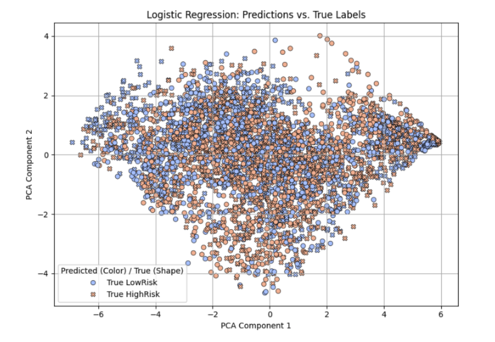
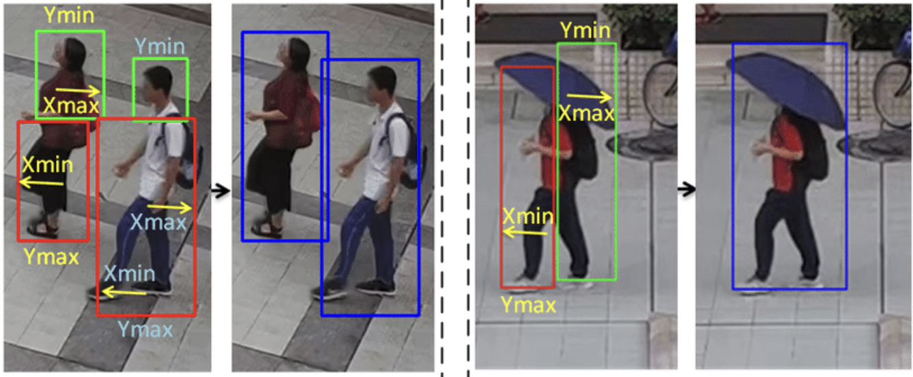
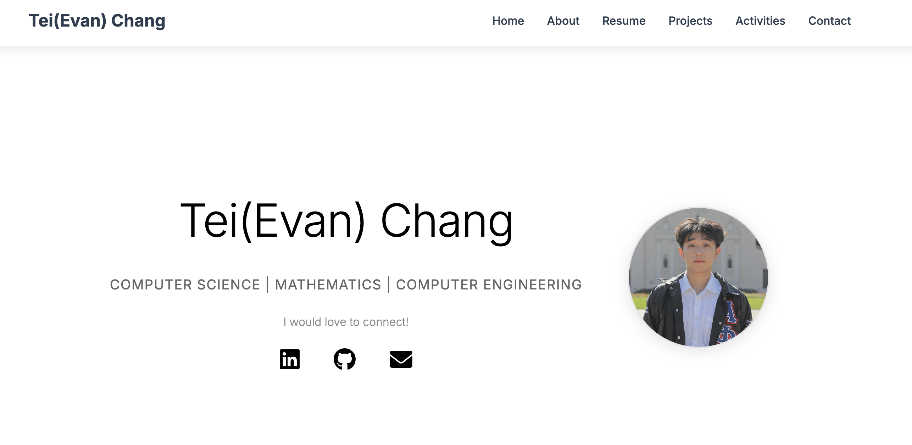
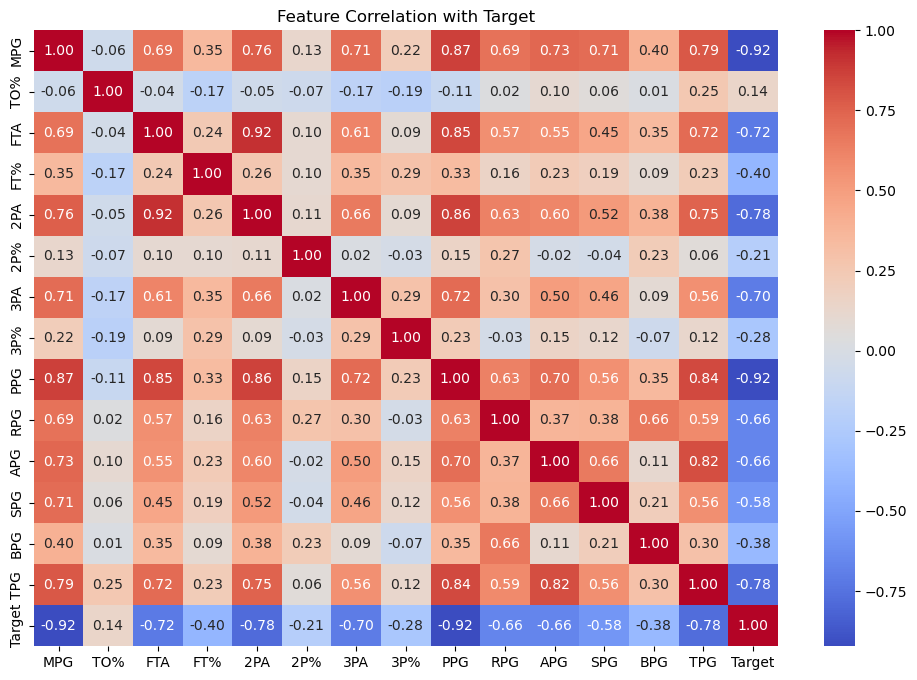
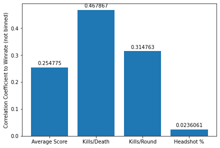
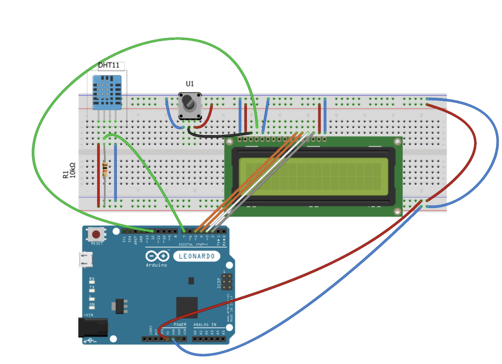

Projects
Check out my creations.
Full Stack Online Ordering System

Ergonomic Risk Detection Research

AI Motivational Web Application

AI Camera Safety Bot

Personal Website

NBA Statistic Analysis

Gaming Statistic/Web Scraping Analysis
